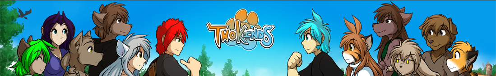
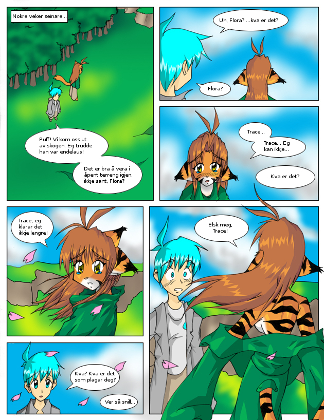

Side 39

Twokinds
av Tom Fischbach, norsk tekst Sigvart Brendberg


 Twokinds av Tom Fischbach, norsk tekst Sigvart Brendberg Twokinds av Tom Fischbach, norsk tekst Sigvart Brendberg
Twokinds av Tom Fischbach, norsk tekst Sigvart Brendberg Twokinds av Tom Fischbach, norsk tekst Sigvart Brendberg